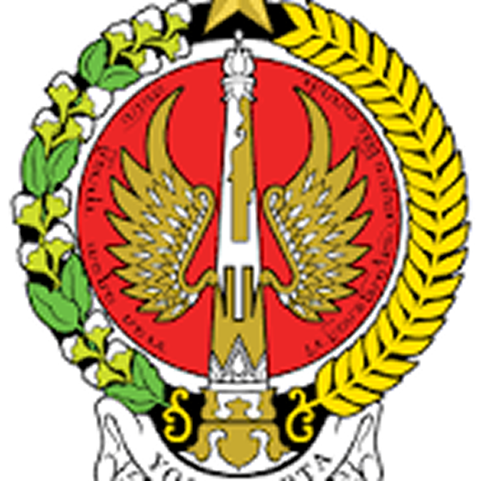

Peringkat pemerintahan berdasarkan respon tercepat se-Indonesia
Top 5 Provinsi Tercepat
Bali
Gubernur : Wayan Koster
Wakil Gubernur : I Nyoman Giri Prasta
Kalimantan Timur
Gubernur : Rudy Mas’ud
Wakil Gubernur : Seno Aji

Daerah Istimewa Yogyakarta
Gubernur : Sri Sultan HB X
Wakil Gubernur : KGPAA Paku Alam X

Jawa Timur
Gubernur : Khofifah Indar Parawansa
Wakil Gubernur : Emil Elestianto Dardak